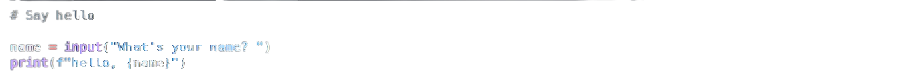
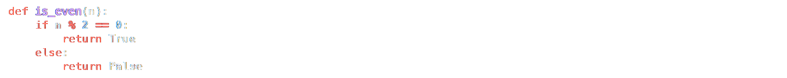
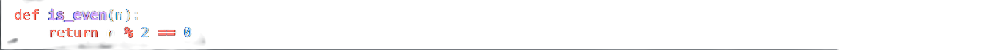

One way to measure the complexity of a program is to count its number of lines of code (LOC), excluding blank lines and comments. For instance, a program like
has just two lines of code, not four, since its first line is a comment, and its second line is blank (i.e., just whitespace). That’s not that many, so odds are the program isn’t that complex. Of course, just because a program (or even function) has more lines of code than another doesn’t necessarily mean it’s more complex. For instance, a function like
isn’t really twice as complex as a function like
even though the former has (more than) twice as many lines of code. In fact, the former might arguably be simpler if it’s easier to read! So lines of code should be taken with a grain of salt. Even so, in a file called lines.py, implement a program that expects exactly one command-line argument, the name (or path) of a Python file, and outputs the number of lines of code in that file, excluding comments and blank lines. If the user does not specify exactly one command-line argument, or if the specified file’s name does not end in .py, or if the specified file does not exist, the program should instead exit via sys.exit. Assume that any line that starts with #, optionally preceded by whitespace, is a comment. (A docstring should not be considered a comment.) Assume that any line that only contains whitespace is blank.
Demo
How to Test
Run your program with python lines.py. Your program should exit with sys.exit and provide an error message:
Too few command-line argumentsCreate two python programs, hello.py and goodbye.py. Run python lines.py hello.py goodbye.py. Your program should exit with sys.exit and provide an error message:
Too many command-line arguments
Create a text file called invalid_extension.txt. Run your program with python lines.py invalid_extension.txt. Your program should exit with sys.exit and provide an error message:
Not a Python fileRun your program with python lines.py non_existent_file.py. Assuming non_existent_file.py doesn’t exist, your program should exit with sys.exit and provide an error message:
File does not existCreate additional python programs which vary in complexity: create some with comments, some docstrings, and some whitespace. For each of these files run python lines.py FILENAME where FILENAME is the name of the file. lines.py should output the number of lines, excluding comments and whitespace, present in the given file.
You can execute the below to check your code using the code below, but be sure to test it yourself as well!
Check/python/week6/lineGreen smilies mean your program has passed a test! Red frownies will indicate your program output something unexpected. Goodluck 😊